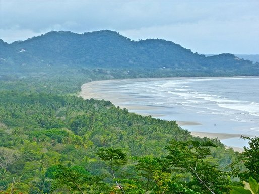

Attractions
|  | The Nicoya Peninsula's sparkling 80-mile shoreline boasts beach-centric towns with cream-colored shores and dense forests. Nosara Beach's powdery sands line the Nicoya Peninsula's western edge. You'll also find fishing and cattle-ranching communities east of the rustic coastline. After a significant rise in tourism that began in the 1970s, an influx of restaurants and hotels have enticed visitors to the peninsula's sandy coast. |
Arenal, one of the world's most active volcanoes, stands more than 5,000 feet high. For the latter half of the 20th century, admirers traveled to its base in droves to catch a glimpse of glowing rocks and molten lava tumbling down its sides. But Arenal wasn't always spewing fiery lava, rocks and ash. The volcano sat dormant for hundreds of years, but on July 29, 1968, Arenal awoke from its slumber. A thunderous earthquake shook the area and a subsequent explosion of lava wiped out three nearby villages. Frequent eruptions continued until 2010, when the volcano re-entered a non-active state. |
|
San José, Costa Rica's vibrant capital, serves as a central base for exploration. You'll likely want to stop here before heading to the country's magnificent rainforests and beaches. Soaring offices, apartment buildings and museums will tower above you as you roam through the city's interconnected barrios (districts).Once in San José, it is easy to traverse the city on foot. Visitors should note that San José's street are not clearly marked; however, the city sprawls across a grid, making it easy to navigate. |